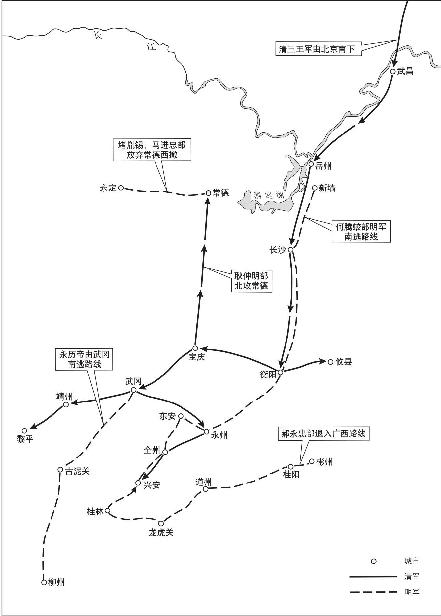

第五节清孔有德等三王兵入湖南
清廷接到征南大将军贝勒博洛的军队平定浙江的捷报以后，为了加速征服南明，于1646年（顺治三年、隆武二年）八月十五日派遣恭顺王孔有德、怀顺王耿仲明、智顺王尚可喜、续顺公沈志祥、右翼固山额真金砺、左翼梅勒章京屯泰（佟岱、佟养和）统领本部兵马南下，进攻湖广和两广，任命孔有德为平南大将军节制各部854。孔有德等受命后，回辽东收拾兵马，直到1647年二月初才到达湖南岳州。这月十六日，孔有德、耿仲明、尚可喜三王带领主力由陆路、屯泰由水路，向明军扼守的新墙、潼溪进攻。明军不堪一击，纷纷如鸟兽散855。十八日，清军进迫湘阴，章旷同部将逃往长沙，同督师何腾蛟商量对策。当时驻守长沙的澧阳伯王进才建议调驻守常德的马进忠、王允才部前来长沙加强防守力量。不料，马、王二部还在途中，清军就已经直趋长沙城下。王进才眼看兵力不敌，保护何腾蛟乘船南撤。二十五日，清军占领长沙。

孔有德在占领长沙以后，为解除两翼威胁，在湖南站稳脚跟，派耿仲明进攻常德地区，尚可喜领兵直捣黄朝宣盘踞的攸县燕子窝。同时派人招降驻于浏阳的何腾蛟中军总兵董英。三月初七日，董英率部降清。马进忠、王允才部在援救长沙途中，得知该城已被清军所占，退往湘西山区，常德无军防守，遂为耿部清军占领856。尚可喜兵至攸县，黄朝宣不敢迎战，遣人向清军“讨招安。恭顺王不允，要洗他巢”857，黄朝宣只好收拾财物领兵窜往衡州。湖南另一明朝将领张先璧则退往宝庆（邵阳）。三月中旬，何腾蛟、章旷先后逃至衡山县。在清军追击下，他俩在云南将领赵印选、胡一青保护下逃到衡州。四月十四日衡州失守，何腾蛟、章旷又逃到永州、东安一带；黄朝宣向清军投降，由于他长期蹂躏地方，百姓怨恨，孔有德为了收买人心，下令把黄朝宣父子处死。
孔有德指挥的清军几乎没有遇到任何抵抗，就占领了湖南大部分地区。当时已入盛夏，清兵在长沙、衡州一带避暑，暂时停止了进兵。永历帝在武冈军阀刘承胤控制下苟延残喘，章旷于八月初八日病死于永州，何腾蛟奔走于武冈、永州之间一事无成。中秋以后，金风送暑，清军即开始向武冈、永州进攻，迅速占领了除湘西部分土司以外的湖南全境。何腾蛟作为南明湖广等地总督和督师，在湖南经营了一年多时间，兵员多时号称十三镇，又提拔了大批亲信文官出任巡抚等官职，不仅没有收复湖北寸土，而且在清军南下时即全盘瓦解。偏沅巡抚傅上瑞降清，章旷死后接替恢抚的吴晋锡做了清朝统治下的“遗民”，部下将领有的降清，有的逃入广西。这就是何腾蛟经营湖南的业绩。jrlL0byW9Ne87ZpE8E6ZcfYMY5iXrsHkq43YkM4CwlBfNswc4SrCX2FIWkZuO2SoCQt5AuOksu09AGsY7oCJlQ==
注释
- 854《清世祖实录》卷二十七，参见《平南王元功垂范》卷上。
- 855顺治四年四月湖广巡抚高士俊揭帖中说：“二月十六日大兵自岳起营，三王统铁骑由陆路南进，兵部佟（屯泰）由水路前行。”蒙正发《三湘从事录》记是月十五日清军“扑”新墙、潼溪，明军皆溃。此处据清方档案记载。
- 856上引湖广巡抚高士俊揭帖中说：“常德府士民兵马闻大兵南向，俱已逃散，止存空城。”实际情况是马进忠等部奉调援长沙，三月初曾到达新化、湘乡一带。援长沙既已成泡影，常德守军亦空。
- 857吴晋锡《半生自纪》记：“三王兵至衡，黄朝宣率其子降，以为长保富贵。三王先命朝宣之兵释兵械，召朝宣入，历数残暴之罪，支解之，以快人心。”王夫之《永历实录》卷十记黄朝宣投降后被乱箭射死。